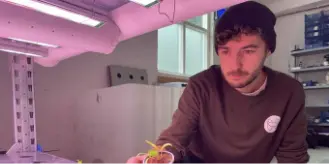

Omtale
Hvad siger vores kunder?
Martin H.
Gartneri - CEO
“Jeg kan godt lide den modulære funktionalitet i deres systemer. Da jeg ikke er klar til at omlægge hele mit gartneri endnu.”
Carsten P.
Gartneri - CFO
“Hydrovertic gør det nemt at leve op til miljøkrav. Det giver især god mening at bruge systemet i formeringsfasen.”
Peter H.
Væksthus gartner
"Det hele var oppe at køre en måned efter jeg kontaktede Hydrovertic.”
Nyheder
Fremtiden er vertikal landbrug
08/10/21
"Prototypen er klar til at blive testet. - Vertical farming-begrebet har generelt fået stor opmærksomhed, og det har vi også mærket, siger direktør Rudy Mandrup Cazelles..."
Vertikalt landbrug til den nye normal
08/10/21
"Vertikalt landbrug har fået en masse opmærksomhed de seneste år. Men de dyrkningsmoduler, der indtil videre er på markedet, er enten designet til små…”

Rudy og Jacob vil gøre gartnerierne grønnere
08/10/21
"Idéen har de fire ingeniørstuderende fået under deres uddannelse på SDU, og som en række andre studerende har de fået hjælp af SDU Entrepreneurship Labs…”